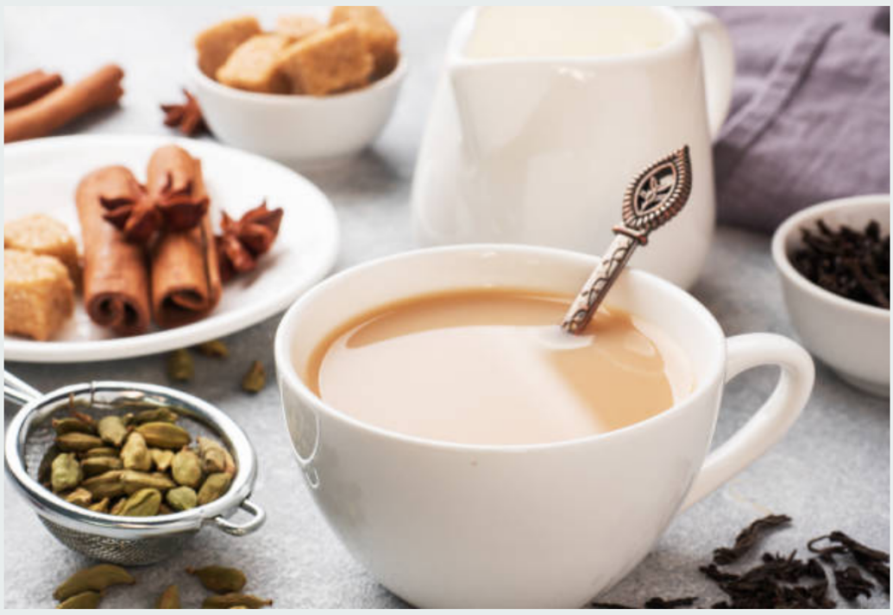

| home | 밀크티의 역사 |
|
 밀크티는 흔히 영국에서 시작됐다고 알려져 있지만 이는 아직 논쟁이 있습니다. 첫 기록은 1680년 파리의 마담 세비네의 편지에서 마거리트 부인이 홍차에 우유를 넣어 마시니 특별한 맛이라고 했던 내용이 있습니다. 영국의 기록은 1670년 런던의 차 무역상이자 커피 하우스 주인인 토마스 가웨이의 기록인데 홍차에 우유를 섞으면 위장 장애를 막을 수 있다는 내용이었습니다. 이떄의 홍차는 매우 진해 위의 통증이 자주 일어났다고 합니다. 하지만 이 기록은 음료로서 즐기기 위한 밀크티가 아니라 단순히 홍차가 위에 부담이 가기 떄문에 쓰여진 글로 보입니다. 이보다 더 앞선 기록은 1650년 북경의 네덜란드 동인도 회사의 유한 뉴호프의 기록으로 만주의 귀족들은 홍차 찻잎을 물에 잔뜩 넣고 끓인 후 소금 뿌린 따뜻한 우유를 채워 뜨겁게 마신다고 적혀있습니다. 이때 네덜란드를 통해 동양의 홍차가 유럽으로 퍼지며 홍차에 우유를 넣는 방법이 퍼졌다는 속설이 있습니다. 이것이 영국을 밀크티의 시발점으로 보지 못하는 이유 입니다. 어떻게 퍼지게 됬는가에 대한 이유는 분분하지만 유럽인들이 홍차에 우유를 탔던 이유는 분명합니다. 우선 설탕은 당시 매우 비싼 사치품이기 때문에 돈이 많은 사람들이 부를 과시하기 위해, 홍차의 쓴맛을 줄이기 위해 넣었습니다. 우유는 앞서 말했듯이 당시 홍차가 매우 쓰기 때문에 이를 중화시킬 목적으로 넣었습니다. 하지만 그 시작에 대해서도 매우분분합니다. 프랑스가 중심이 된다면 홍차의 부드러운 맛을 즐기기 위해 우유를 탔다는 설이 되고 영국이 중심이 된다면 약처럼 쓴 홍차의 쓴맛과 위의 부담을 줄이기 위해 밀크티가 생겼다는 설이 설득력을 갖습니다. 네덜란드를 통해 밀크티가 퍼졋다면 이야기가 달라지는데 유럽인들이 중국인을 따라하기 위해, 즉 청나라 지배층이 차에 우유를 타서 마신것을 모방한 속물주의가 밀크티의 기원이라는 설입니다. 이후 19세기에는 영국에서 홍차가 대중화되고 서민도 홍차를 마시게 되면서 홍차에 우유를 탈 것인지, 우유에 홍차를 따르는 것이 맞는지에 대한 논쟁도 있었습니다. 서민들은 홍차가 여전히 비쌌기에 먼저 찻잔에 값싼 우유를 가득 채운 후 비싼 홍차를 따랐습니다. 반면 귀족과 부유층은 찻잔에 홍차를 먼저 따른 후 부드럽게 마시기 위해 우유를 따랐습니다. 때문에 영국에서는 홍차와 우유 타는 순서를 보고 출신 가문을 판단하기도 한다고 합니다. 홍차의 유래는 어떤것이 맞을까요? 밀크티를 만드는 방식은 어떤것이 맞는 걸까요? | |